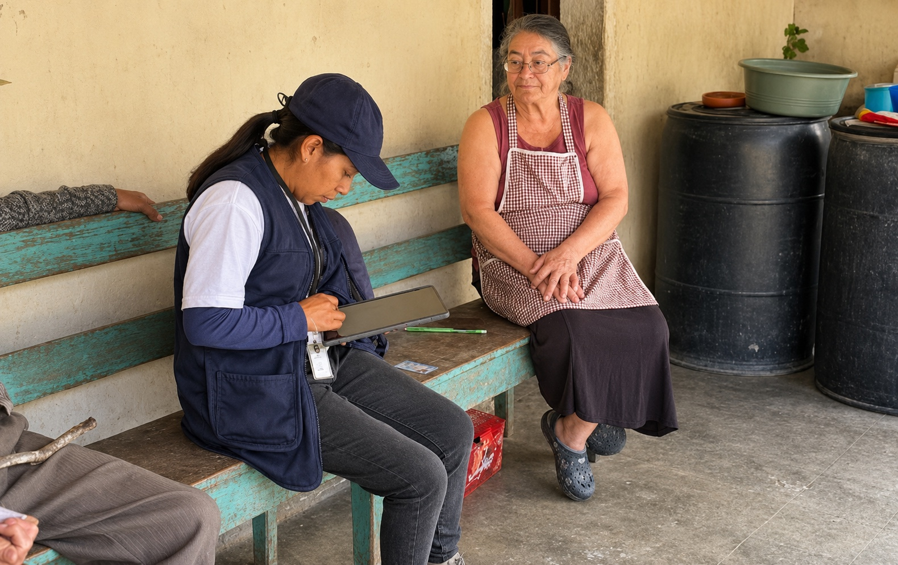

Encuesta STEPS en Guatemala
¿Qué pasa si mi hogar es seleccionado?
STEPS for Guatemala reúne un simulador para planificar el trabajo de campo y un recorrido para entender cómo podría realizarse la encuesta. Aquí puedes conocer qué pasaría en cada paso, cómo verificar una visita y cómo se usarían tus respuestas.
Conoce los tres pasos
Propuesta para el Datatón. Esta página explica cómo podría realizarse la encuesta en Guatemala. Las instituciones comunicarían cualquier operativo oficial por sus propios canales.
De la visita al puesto de salud
-
Paso 1 · En casa
Conversar con el equipo del INE
Si tu hogar forma parte de la muestra, el personal del INE explicaría la encuesta e invitaría a una persona adulta seleccionada a responder preguntas sobre su alimentación, actividad física y otros hábitos. También le indicaría cómo acudir al puesto o centro de salud.
-
Paso 2 · En el puesto o centro de salud
Tomar medidas sencillas
Personal de salud mediría la presión arterial, el peso, la estatura y la cintura. Antes de cada medición, la persona participante puede pedir que le expliquen qué harán y para qué.
-
Paso 3 · Con una invitación adicional
Completar las pruebas previstas
Algunas personas podrían recibir una invitación para pruebas de laboratorio. Si te invitan, el personal de salud te explicaría cuáles te corresponden, dónde acudir y si necesitas alguna preparación.
Antes de decidir si participas
¿Por qué seleccionan algunos hogares?
El equipo elegiría al azar un grupo de hogares siguiendo reglas de muestreo. La idea es conocer la situación de distintas comunidades sin visitar todas las viviendas de Guatemala.
¿Cómo puedo verificar quién me visita?
Pide una identificación institucional. Si tienes dudas, confirma la visita por los canales oficiales del INE antes de dar información. Sitio oficial del INE
¿Puedo hacer preguntas o decidir no participar?
Sí. La propuesta contempla una participación voluntaria. Antes de decidir, puedes preguntar para qué sirve cada paso, qué te pedirán y con quién comunicarte si tienes dudas.
¿Qué pasaría con mis respuestas?
Antes de participar, el equipo tendría que explicarte qué guardaría, quién podría verlo y para qué lo usaría. La propuesta contempla divulgar resultados por grupos, por ejemplo el porcentaje de adultos con un factor de riesgo. Puedes recorrer esta demo sin ingresar datos personales.